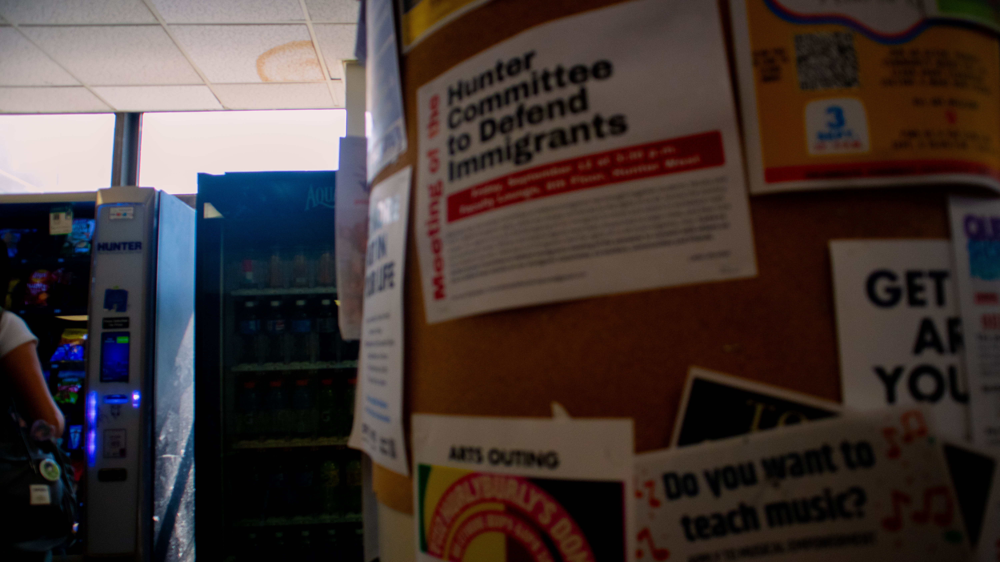

For the first image, I noticed that the shadows and midtones had a lot of yellow, which I toned down without diminishing the strength of the yellow poster in the foreground. I raised the contrast in the image to further distinguish the background.


For the second image, I realized that there was some desaturation and the whites were clipping from the window. By lowering the exposure and balancing the contrast, I achieved a look with additional color than before that isn't ultimately blinding.
